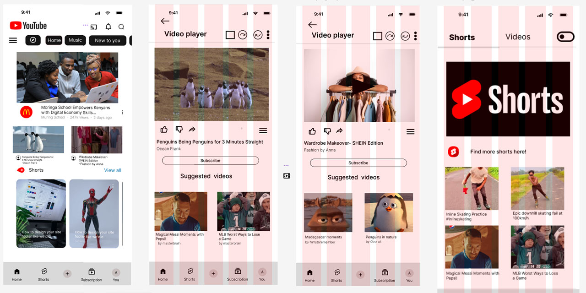

A responsive web app replicating YouTube’s key interface and UX interactions, built with HTML, CSS, and JavaScript.
The goal was to understand media streaming interfaces and build a responsive layout that mirrors the user experience of a major content platform.
The final prototype mimics YouTube’s key UX patterns, maintaining responsiveness across devices and a clean UI layout.